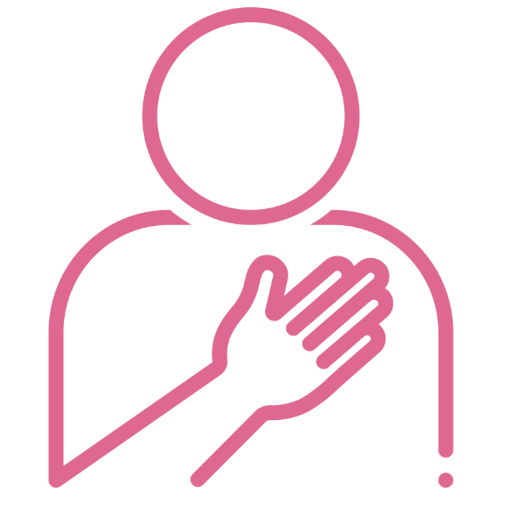
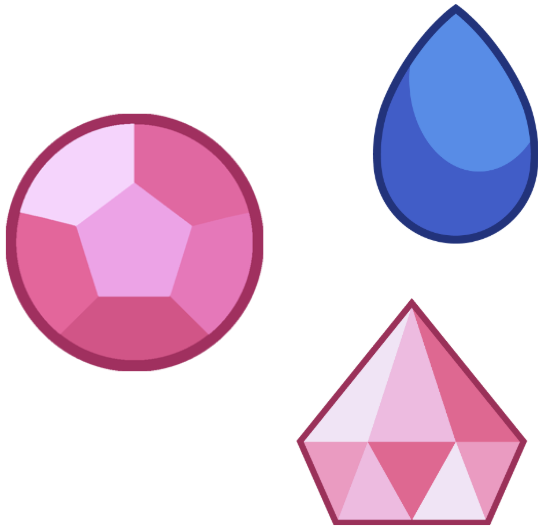
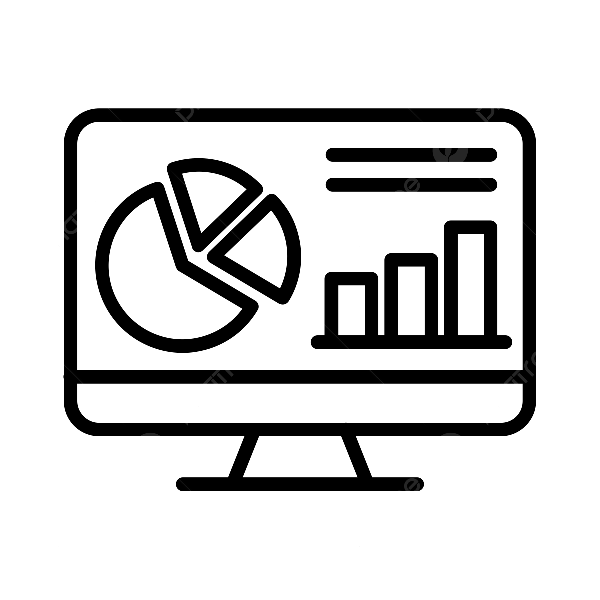

Seja você mesmo e responda com honestidade para maior precisão.
Descubra qual Gem te representa.
Descubra sua personalidade.
Quando você tem um tempo livre, geralmente prefere sair com outras pessoas do que ficar sozinho.
Em festas ou eventos sociais, você costuma se sentir energizado em vez de cansado.
Você normalmente toma a iniciativa para puxar conversa com estranhos.
Quando algo te anima ou frustra, você tende a expressar isso facilmente para os outros.
Em um grupo de trabalho, você prefere colaborar ativamente em vez de focar em tarefas individuais.